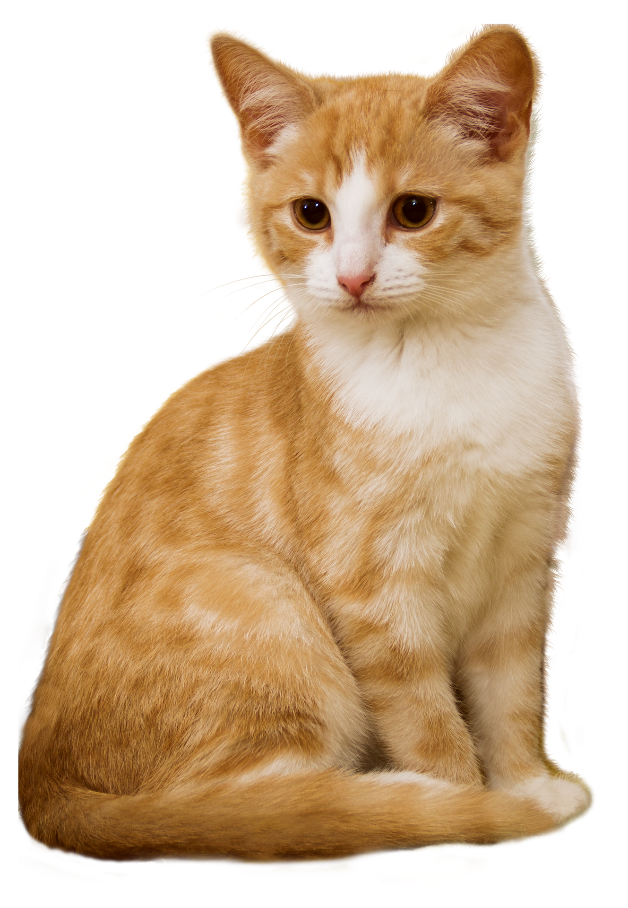
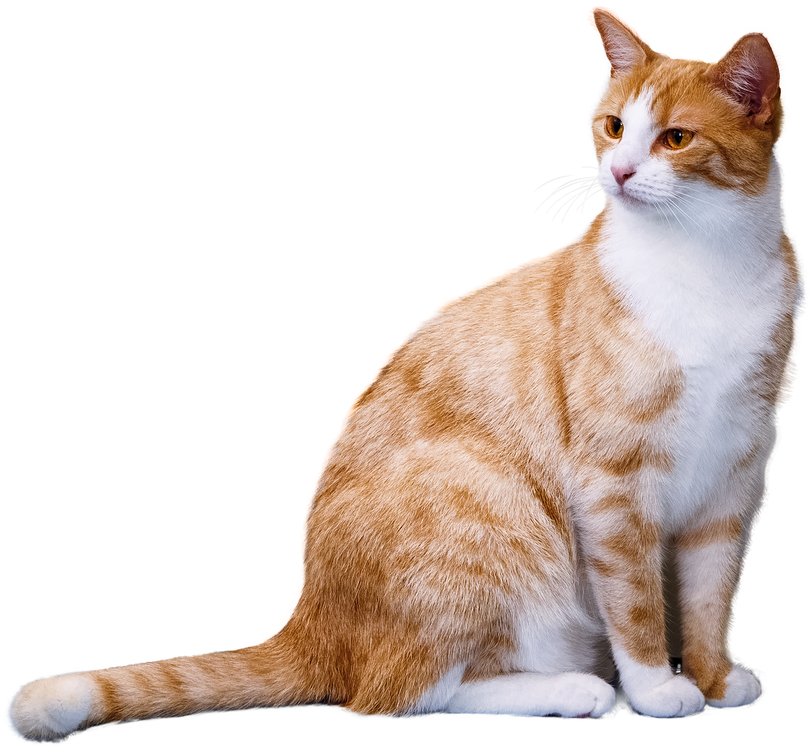
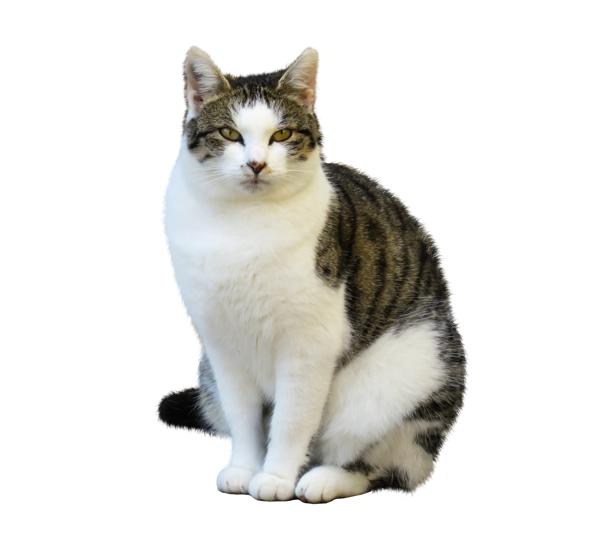

Lesson 63
-es

ufliteracy.org


Lesson 63
-es


See UFLI Foundations lesson plan Step 1 for phonemic awareness activity.


See UFLI Foundations lesson plan Step 2 for student phoneme responses.


g
c
a
i
o
e
u
nk
ng
wh
ph
ch
th
sh
ck
s


See UFLI Foundations lesson plan Step 3 for auditory drill activity.

No slides needed for auditory drill.


See UFLI Foundations lesson plan Step 4 for blending drill word chain and grid.
Visit ufliteracy.org to access the Blending Board app.


See UFLI Foundations lesson plan Step 5 for recommended teacher language and activities to introduce the new concept.
_________________
s
3 cats
1 cat



I run.
He runs.
-es
__ch
__sh
__s
__x
__z
bunches
dishes
kisses
boxes
buzzes
e s


e s
dishes
buzzes
fetches
e

Handwriting paper for letter formation practice. Use as needed.
See UFLI Foundations manual for more information about letter formation.

boxes
dresses

foxes
ashes
inches
buses
gases
lunches
lashes
dishes

See UFLI Foundations lesson plan Step 5 for words to spell.
Handwriting paper to model spelling.

See UFLI Foundations lesson plan Step 5 for words to spell.
Handwriting paper for guided spelling practice.


Insert brief reinforcement activity and/or transition to next part of reading block.

Lesson 63
-es

New Concept Review

See UFLI Foundations lesson plan Step 5 for recommended teacher language and activities to review the new concept.
_________________
s
3 cats
1 cat
I run.
He runs.
-es
__ch
__sh
__s
__x
__z
bunches
dishes
kisses
boxes
buzzes
e s
dishes
buzzes
fetches
e
kisses
dishes
inches
buses


See UFLI Foundations lesson plan Step 6 for word work activity.
Visit ufliteracy.org to access the Word Work Mat apps.


See UFLI Foundations lesson plan Step 7 for irregular word activities.
The white rectangle under each word may be used in editing mode. Cover the heart and square icons then reveal them one at a time during instruction.

See UFLI Foundations manual for more information about reviewing irregular words.

by
Lessons 55-72
*Temporarily irregular
Y /ī/ has not been introduced yet.
The white rectangle under the word may be used in editing mode. Cover the heart and square icons then reveal them one at a time during instruction.
my
Lessons 55-72
*Temporarily irregular
Y /ī/ has not been introduced yet.
The white rectangle under the word may be used in editing mode. Cover the heart and square icons then reveal them one at a time during instruction.
see
Lessons 19-84
*Temporarily irregular
EE /ē/ has not been introduced yet.
The white rectangle under the word may be used in editing mode. Cover the heart and square icons then reveal them one at a time during instruction.
one
Lesson 58+
O represents the sounds /w/+/ŭ/.
The final E is silent but does not follow the long vowel VCe pattern.
The white rectangle under the word may be used in editing mode. Cover the heart and square icons then reveal them one at a time during instruction.
once
Lessons 60+
O represents the sounds /w/+/ŭ/.
The white rectangle under the word may be used in editing mode. Cover the heart and square icons then reveal them one at a time during instruction.
Handwriting paper for irregular word spelling practice. Use as needed.
See UFLI Foundations manual for more information about reviewing irregular words.
Teach
The orange star indicates these are new irregular words that need to be introduced.
See UFLI Foundations manual for more information about teaching irregular words.
two
Lesson 63+
W is silent.
O represents the /ū/ sound.
The TW in TWO can be connected with other TW words related to the number 2 (e.g., TWIN, TWELVE, TWICE). This connection can help children remember why TWO is spelled with a W.
The white rectangle under the word may be used in editing mode. Cover the heart and square icons then reveal them one at a time during instruction.
does
Lesson 63+
O represents the /ŭ/ sound.
ES spells /z/. This is an irregular way to add the -ES ending to a word.
The white rectangle under the word may be used in editing mode. Cover the heart and square icons then reveal them one at a time during instruction.

Handwriting paper for irregular word spelling practice. Use as needed.
See UFLI Foundations manual for more information about teaching irregular words.


See UFLI Foundations lesson plan Step 8 for connected text activities.
He has to scrub the two dishes.
Which one of the buses is mine?
Does Phil have the boxes?
See UFLI Foundations lesson plan Step 8 for sentences to write.

The UFLI Foundations decodable text is provided here. See UFLI Foundations decodable text guide for additional text options.
Two Foxes
When Alex goes for walks, he brings boxes of snacks for the two foxes. The home of the two foxes is a den close to his home. Alex likes to see the foxes by their den. Alex smiles at the foxes.
Alex likes when the foxes munch on the snacks. The foxes like Alex so much, he gets kisses from them. Alex wishes he could see the foxes all the
time. But they like to spend a lot of time in their den.

Insert brief reinforcement activity and/or transition to next part of reading block.